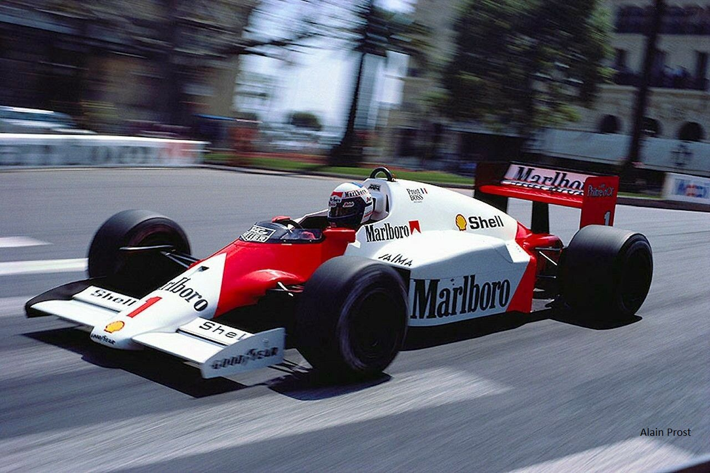
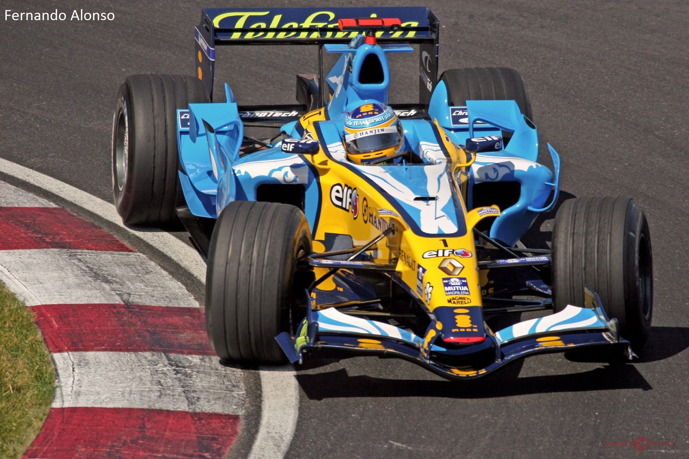

PILOTI ENTRATI NELLA LEGGENDA
Qui, in questa pagina, troverai piloti di Formula 1 entrati nella storia di questo sport.Non solo quelli entrati per ciò che hanno fatto durante la loro carriera, ma anche quelli (forse) conoscuti per il loro soprannome. Purtroppo in alcuni casi non sono riuscito a trovare più informazioni di quelle scritte qui sotto. Qui sotto c'è una lista dei piloti elencati.
-
$value) {
print "
- $value " } ?>
Alain Prost “Il Professore”
Alain Marie Pascal Prost (Lorette, 24 febbraio 1955) è un ex pilota automobilistico francese, vincitore di 51 Gran Premi di Formula 1 e quattro volte campione del Mondo. Il suo debutto in Formula 1 risale al 1980 su McLaren e la sua attività di pilota nella massima categoria di competizioni su pista è proseguita fino al 1993. Le sue numerose vittorie (mediamente una ogni quattro Gran Premi disputati) lo hanno portato a diventare il pilota più vincente della storia della Formula 1, superando nel 1987 il record di gare vinte appartenuto fino a quel momento a Jackie Stewart. Il primato è stato poi battuto, 14 anni dopo da Michael Schumacher. La sua carriera è stata contrassegnata da molti duelli con altri famosi piloti del tempo, come Niki Lauda, Nigel Mansell, Nelson Piquet e soprattutto Ayrton Senna; piloti che, per alcune stagioni, ha anche avuto come compagni di scuderia: in Ferrari è stato al fianco di Mansell e in McLaren prima di Lauda e successivamente di Senna. Dopo il suo ritiro dalla Formula 1, dal 1997 al 2001 è stato costruttore nella massima serie, portando la sua Prost Grand Prix a disputare 83 Gran Premi, senza tuttavia cogliere vittorie. Dal 2003 ha cominciato a gareggiare nel Trofeo Andros, competizione nella quale è diventato campione nel 2007, 2008 e 2012. Prost è stato soprannominato "Il professore" per il suo approccio tattico alle gare e per la sua pignoleria nella messa a punto della monoposto.Il pilota era, infatti, esperto nell'assetto della sua vettura e tendeva a conservare pneumatici e freni a inizio gara, per sfruttarli meglio in un eventuale duello nelle ultime tornate. Stagioni 1980-1991, 1993 Scuderie McLaren 1980 Renault 1981-1983 McLaren 1984-1989 Ferrari 1990-1991 Williams 1993 Mondiali vinti 4 (1985, 1986, 1989, 1993) GP disputati 202 (199 partenze) GP vinti 51 Podi 106 Punti ottenuti 798,5 (768,5 iridati validi) Pole position 33 Giri veloci 41
Alberto Ascari
Alberto Ascari (Milano, 13 luglio 1918 – Monza, 26 maggio 1955) è stato un pilota automobilistico e pilota motociclistico italiano, vincitore del titolo di campione del mondo di Formula 1 nel 1952 e nel 1953. Nella massima serie automobilistica disputò un totale di trentadue Gran Premi, vincendone tredici e salendo per diciassette volte sul podio. Ottenne inoltre quattordici pole position e si schierò per venticinque volte in prima fila. È l'ultimo pilota italiano ad avere vinto il titolo mondiale piloti e detiene il record per la più alta percentuale di vittorie in una stagione, infatti nel 1952 vinse sei delle otto corse in calendario, aggiudicandosi l'alloro iridato con il massimo dei punti possibili (cosa che riuscì solamente a Jim Clark nel 1963 e nel 1965). Sempre ad Ascari appartiene il record di giri veloci conquistati in gare consecutive: sette, a partire dal Gran Premio del Belgio 1952 per concludersi con il Gran Premio d'Argentina 1953. Pilota completo, aveva uno stile di guida preciso e rispettoso del mezzo meccanico; era inoltre solito imporre un elevatissimo ritmo gara nelle prime fasi della corsa ed in seguito gestire il vantaggio che aveva accumulato.Seppe distinguersi anche con vetture a ruote coperte. I suoi migliori risultati furono un secondo posto alla Carrera Panamericana del 1951, la vittoria al Rallye del Sestriere sempre nello stesso anno, il successo alla 1000 km del Nürburgring nel 1953 ed infine la vittoria su Lancia D24 alla Mille Miglia del 1954. Prese parte anche alla 24 Ore di Le Mans del 1952 e 1953 guidando una Ferrari e realizzando in entrambe le occasioni il giro più veloce in gara. Stagioni 1950-1955 Scuderie Ferrari 1950-1954 Maserati 1954 Lancia 1954-1955 Mondiali vinti 2 (1952, 1953) GP disputati 32 GP vinti 13 Podi 17 Punti ottenuti 140 Pole position 14 Giri veloci 12
Emerson Fittipaldi “Emmo”
Emerson Fittipaldi (San Paolo, 12 dicembre 1946) è un ex pilota automobilistico brasiliano di origini italiane (esattamente lucane) e russo-polacche, soprannominato "Emmo", ma anche "O Rato" (cioè "Il Topo") per la sua dentatura caratteristica. È stato campione del Mondo di Formula 1 nel 1972 e 1974, vincendo un totale di 14 Gran Premi. Ha poi tentato senza fortuna di fondare una propria scuderia Fittipaldi insieme al fratello Wilson, anch'egli pilota. Successivamente si è trasferito in America, dove ha vinto un campionato CART e due 500 Miglia di Indianapolis a suo tempo unica gara del campionato USAC che assegnano al brasiliano anche 2 titoli americani. Dopo A.J. Foyt, Michael Schumacher e Rick Mears, è il pilota più titolato nei massimi campionati a ruote scoperte insieme a Juan Manuel Fangio e Mario Andretti. Stagioni 1970-1980 Scuderie Lotus 1970-1973 McLaren 1974-1975 Fittipaldi 1976-1980 Mondiali vinti 2 (1972, 1974) GP disputati 149 (144 partenze) GP vinti 14 Podi 35 Punti ottenuti 281 Pole position 6 Giri veloci 6
Jim Clark
James Clark Jr., detto Jim (Kilmany, 4 marzo 1936 – Hockenheim, 7 aprile 1968), è stato un pilota automobilistico britannico. È considerato uno dei migliori piloti di Formula 1 di tutti i tempi ed è stato insignito dell'Ordine dell'Impero Britannico. Il suo stile di guida si basava sulla sua velocità: non aveva una particolare tattica di gara, otteneva spesso la pole position poi partiva sempre molto forte ottenendo, già nel primo giro, un margine di vantaggio sugli inseguitori, quindi se la macchina non aveva problemi procedeva continuando a migliorare i tempi sul giro. Era anche molto versatile riuscendo a portare al limite macchine diverse adeguando la sua guida secondo il tipo di vettura, l'unica cosa in cui non emergeva era nella bagarre con gli altri concorrenti. Stagioni 1960-1968 Scuderie Lotus 1960-1968 Mondiali vinti 2 (1963, 1965) GP disputati 72 GP vinti 25 Podi 32 Pole position 33 Giri veloci 28
Giovanni Lavaggi “Johnny Carwash”
Lavaggi corse in F1 solamente sette volte, ma durante il suo trascorso nella massima serie iridata si guadagnò il nomignolo di “Johnny Carwash”, dovuto alla traduzione del suo cognome dall’italiano all’inglese. “Molto meglio del soprannome che ricevetti dagli americani quando correvo nella IndyCar: Johnny Lasagna!” ha detto il pilota italiano. Giovanni Lavaggi (Augusta, 18 febbraio 1958) è un ex pilota automobilistico italiano. È nipote dell'aviatore Giovanni Lavaggi, perito il 7 agosto 1935 nell'incidente aereo in cui perse la vita il ministro dei lavori pubblici Luigi Razza, all'aeroporto El Almaza de Il Cairo. Stagioni 1995-1996 Scuderie Pacific Minardi Miglior risultato finale 22° (1996) GP disputati 10 (7 partenze)
Piero Taruffi “The Silver Fox”
Il soprannome di questo pilota italiano è dovuto al fatto che i suoi capelli bianchi hanno cominciato a spuntare un po’ troppo prematuramente: se ne accorsero per la prima volta i media messicani quando vinse in una gara su strada nel 1951, e da quel giorno gli venne affibbiato l’appellativo di “Silver Fox”. Piero Taruffi (Albano Laziale, 12 ottobre 1906 – Roma, 12 gennaio 1988) è stato un pilota automobilistico, pilota motociclistico e progettista italiano. Stagioni 1950-1952, 1954-1956 Scuderie Alfa Romeo Ferrari Mercedes Maserati Vanwall Miglior risultato finale 3° (1952) GP disputati 18 GP vinti 1 Podi 5 Pole position 0 Giri veloci 1
Gilles Villeneuve “L'aviatore”
Gilles Joseph Henri Villeneuve ([?il vil'nœv]; Saint-Jean-sur-Richelieu, 18 gennaio 1950 – Lovanio, 8 maggio 1982) è stato un pilota automobilistico canadese. Soprannominato l'Aviatore, iniziò la propria carriera sportiva partecipando a gare tra motoslitte nella nativa provincia del Québec. Successivamente passò alla guida delle monoposto, e nel 1976, vinse sia il Campionato di Formula Atlantic canadese che quello statunitense. Un anno più tardi la McLaren fece esordire Villeneuve in Formula 1 al Gran Premio di Gran Bretagna 1977; nel corso della medesima annata la Scuderia Ferrari lo ingaggiò per le ultime due gare stagionali in sostituzione di Niki Lauda. Legatosi alla scuderia di Maranello per il resto della carriera fece registrare sei vittorie nei Gran Premi ed una vittoria nella Race of Champions del 1979 a Brands Hatch (gara non valida per il titolo), oltre ad un secondo posto nella classifica del Mondiale 1979 alle spalle del compagno di squadra Jody Scheckter come miglior risultato. Morì in uno schianto a 227 km/h causato da un contatto con la March di Jochen Mass durante le qualifiche per il Gran Premio del Belgio 1982 a bordo della Ferrari 126 C2. Villeneuve al momento del decesso era molto popolare tra gli appassionati per il suo stile di guida altamente combattivo e spettacolare, e da allora è diventato un simbolo della storia di questo sport, nonché uno dei più grandi piloti di tutti i tempi pur non avendo mai vinto un titolo mondiale. Le sue vittorie e svariate altre prestazioni vengono considerate capolavori assoluti nella storia della Formula 1, anche perché spesso sono state ottenute al volante di monoposto non all'altezza di quelle della concorrenza. Suo figlio Jacques sarebbe poi diventato nel 1997 il primo – e tuttora unico – canadese campione del mondo dei piloti di Formula 1. Stagioni 1977-1982 Scuderie McLaren 1977 Ferrari 1977-1982 Miglior risultato finale 2º (1979) GP disputati 68 (67 partenze) GP vinti 6 Podi 13 Punti ottenuti 107 Pole position 2 Giri veloci 8
Maurice Trintignant “Le Petoulet”
Il pilota francese, due volte vincitore a Monaco negli anni 50, fu soprannominato con un nomignolo a causa di un ritiro da una gara organizzata a Parigi: la sua Bugatti si era fermata per via di alcuni escrementi di topo (“Le Petoulet”) che avevano bloccato il sistema di alimentazione. Da quel momento si guadagnò questo nomignolo, che accettò senza lamentarsi troppo. Maurice Trintignant (Sainte-Cécile-les-Vignes, 30 ottobre 1917 – Nîmes, 13 febbraio 2005) è stato un pilota automobilistico francese. Zio del celebre attore Jean-Louis Trintignant, era soprannominato "Pétoulet" (traducibile dal francese con "escremento di topo") o il "Pilota gentiluomo".Dotato di una guida non aggressiva, ma rispettosa della meccanica della sua vettura, riusciva ad imporsi soprattutto nei circuiti cittadini o in condizioni di scarsa aderenza del tracciato.[1] Durante la sua carriera disputò 84 Gran Premi in Formula 1 (82 corse) correndo su Simca-Gordini, Ferrari, Vanwall, Bugatti, Cooper, Maserati, BRM, Aston Martin, Lotus e Lola. Stagioni 1950-1964 Scuderie Gordini Ferrari Vanwall Bugatti Cooper Maserati BRM Aston Martin Lotus Lola Mondiali vinti 0 Miglior risultato finale 4° (1954, 1955) GP disputati 84 (82 partenze) GP vinti 2 Podi 10 Punti ottenuti 72,33 Pole position 0 Giri veloci 1
Luigi Fagioli “Il ladro degli Abruzzi”
Se fosse ancora in giro, il suo soprannome sarebbe Mr Bean, ma il suo vero nomignolo è un altro: “Il ladro degli Abruzzi”. Non si sa di preciso il perchè di questo psedonimo, dal momento che Luigi non era originario dell’Abruzzo né aveva la fama di criminale. Forse per via del suo modo di fare molto selvaggio, che lo contraddistinse come un nulla di buono, oppure perchè nel 1933 rubò una vittoria a Tazio Nuvolari. Luigi Fagioli (Osimo, 9 giugno 1898 – Monaco, 20 giugno 1952) è stato un pilota automobilistico italiano. Stagioni 1950-1951 Scuderie Alfa Romeo Miglior risultato finale 3° (1950) GP disputati 7 GP vinti 1 Podi 6 Punti ottenuti 28 (32)
Tazio Nuvolari
Tazio Giorgio Nuvolari (Castel d'Ario, 16 novembre 1892 – Mantova, 11 agosto 1953) è stato un pilota motociclistico e pilota automobilistico italiano. La sua carriera sportiva abbraccia un trentennio dal 1920 al 1950, con l'interruzione di oltre sei anni a causa del secondo conflitto mondiale. La carriera di quello che sarà ricordato dalla stampa e dagli appassionati con gli pseudonimi di "Mantovano volante" e di "Nivola", fu tutt'altro che in discesa. Nei primi anni di corse Nuvolari dovette superare molte difficoltà e inseguire per lungo tempo quei successi che non volevano arrivare. Nuvolari è universalmente riconosciuto come uno dei più grandi piloti della storia dell'automobilismo mondiale ed è ancora oggi ricordato e ammirato per le sue molte e speciali qualità, nonché per le sue doti umane. Stagioni 1931-1932, 1935-1939 Scuderie Alfa Romeo Scuderia Ferrari Auto Union Miglior risultato finale 1º classificato Campionato europeo di automobilismo 1932 GP disputati 26 GP vinti 4 Podi 7 Pole position 1 Giri veloci 6
Stirling Moss

Sir Stirling Craufurd Moss (Londra, 17 settembre 1929) è un ex pilota automobilistico inglese di Formula 1, vincitore di 16 Gran Premi. Nella storia della Formula 1 è il pilota che ha vinto il maggior numero di gran premi senza aver mai vinto il titolo mondiale. Terminò con il secondo posto in classifica finale nei campionati 1955, 1956, 1957 e 1958. Proprio a causa di questo suo curioso destino viene considerato l’eterno secondo, il re senza corona, ma anche il più grande pilota a non aver mai vinto il mondiale. È l'ultimo pilota ancora in vita ad aver preso parte al mondiale di Formula 1 del 1951.Inoltre, seguendo la cronologia dei vari Gran Premi, dopo la morte di Robert Manzon, avvenuta il 19 gennaio 2015, è diventato il pilota più anziano tra quelli ancora in vita ad aver partecipato ad una gara valevole per il campionato di Formula 1, avendo esordito nel Gran Premio di Svizzera del 1951.Ciò, però, non fa di lui il decano dei piloti di Formula 1, siccome tale titolo spetta a Kenneth McAlpine, pilota che, tuttavia, ha esordito solo nel 1952. Stagioni 1951-1961 Scuderie HWM ERA Connaught Cooper Maserati Mercedes Vanwall BRM Lotus Ferguson Miglior risultato finale 2° (1955, 1956, 1957, 1958) GP disputati 66 GP vinti 16 Podi 24 Pole position 16 Giri veloci 19
José Froilán González “The Pampas Bull”
Conosciuto affetuosamente come “El Cabezon” per la sua testa particolarmente grossa, l’argentino, primo vincitore con la Ferrari in F1, fu poi soprannominato “The Pampas Bull” dalla stampa inglese sia per la sua corporatura che per il suo stile di guida decisamente aggressivi. José Froilán González (Arrecifes, 5 ottobre 1922 – Arrecifes, 15 giugno 2013) è stato un pilota automobilistico argentino, in carriera vincitore di 2 Gran Premi validi per il Campionato Mondiale di Formula 1. Stagioni 1950-1957, 1960 Scuderie Maserati Ferrari Vanwall Miglior risultato finale 2° (1954) GP disputati 26 GP vinti 2 Podi 15 Pole position 3 Giri veloci 6
Ayrton Senna “Magic”
Quando il brasiliano è giunto in F1, il suo talento lo ha portato a compiere dell’imprese poi rimaste nella storia della massima serie iridata. Una tra queste è quella di Monaco 1984, quando arrivò secondo con la Toleman superando tutti gli assi del tempo sotto la pioggia battente. Eccetto uno, il suo acerrimo rivale: Alain Prost. Ayrton Senna da Silva (San Paolo, 21 marzo 1960 – Bologna, 1º maggio 1994) è stato un pilota automobilistico brasiliano, tre volte campione del mondo di Formula 1 nel 1988, 1990 e 1991. Considerato da molti il più forte pilota di Formula 1 di tutti i tempi, coniugava la capacità di portare al limite la sua monoposto con una grande sensibilità nella messa a punto e nella scelta degli pneumatici. Morì in seguito ad un tragico incidente nel Gran Premio di San Marino del 1994. A seguito di ciò è divenuto l'unico pilota iridato a perire durante lo svolgimento di una gara di Formula uno (Jochen Rindt, l'unico altro iridato a perdere la vita durante un weekend di gara, perì durante le prove del G.P. di Monza del 1970). Particolarmente veloce sul giro in prova, Senna è stato il pilota, dopo Juan Manuel Fangio, Jim Clark ed Alberto Ascari, ad avere ottenuto più pole position in rapporto ai Gran Premi disputati, ed è il quinto pilota in classifica per numero di vittorie (41) dietro a Michael Schumacher (91), Lewis Hamilton (64), Alain Prost (51) e Sebastian Vettel (49). Stagioni 1984-1994 Scuderie Toleman 1984 Lotus 1985-1987 McLaren 1988-1993 Williams 1994 Mondiali vinti 3 (1988, 1990, 1991) GP disputati 162 (161 partenze) GP vinti 41 Podi 80 Punti ottenuti 614 (610 iridati validi) Pole position 65 Giri veloci 19
Lewis Hamilton
Lewis Carl Davidson Hamilton (Stevenage, 7 gennaio 1985) è un pilota automobilistico britannico, quattro volte campione del mondo di Formula 1: nel 2008 con la McLaren e nel 2014, 2015 e 2017 con la Mercedes. Annoverato come uno tra i piloti più forti e talentuosi di tutti i tempi, si distingue per il suo stile di guida molto aggressivo, per la sua tenacia e abilità nei sorpassi e per la sua velocità in qualifica, caratteristiche che lo rendono un pilota completo e molto ostico per i rivali. Nato da una coppia mista, con padre nero e madre bianca, è spesso definito come "il primo pilota di colore della Formula 1", sebbene Willy T. Ribbs avesse già testato una vettura nel 1986 pur non partecipando a nessun gran premio. Nel dicembre 1995 ha incontrato per la prima volta il presidente della McLaren Ron Dennis, che tre anni dopo lo ha incluso nel Young Driver Development Program.Dopo aver vinto titoli in competizioni minori come la Formula Renault 2.0, Formula Three Euroseries, e GP2, ha compiuto il suo esordio in Formula 1 nel 2007, 12 anni dopo il suo incontro con Dennis. Ciò lo ha reso il più giovane pilota ad assicurarsi un contratto con la McLaren e a ottenere un posto in F1. Dal suo esordio in massima categoria, Hamilton si è aggiudicato almeno una gara e una pole position durante il campionato mondiale, il che lo rende l'unico pilota nella storia della massima formula a esserci riuscito dalla prima stagione per dodici annate consecutive.È il pilota che ha ottenuto più pole position nella storia della Formula 1 (74) ed il britannico più vincente nella competizione oltre ad essere il secondo per numero di successi conquistati (64), dietro al solo Michael Schumacher (91).Dopo la conquista del suo secondo titolo mondiale nel 2014, è stato nominato da BBC Sport come "sportivo dell'anno".L'anno seguente è divenuto invece il primo britannico a vincere due campionati consecutivi, e il secondo, dopo Jackie Stewart, ad aggiudicarsene tre. Con il quarto mondiale, ottenuto nel 2017, è diventato il pilota britannico con più titoli. Il suo numero di gara è il 44. Stagioni 2007- Scuderie McLaren 2007-2012 Mercedes 2013- Mondiali vinti 4 (2008, 2014, 2015, 2017) GP disputati 214 GP vinti 64 Podi 122 Punti ottenuti 2720 Pole position 74 Giri veloci 38
Andrea De Cesaris “Andrea de Crasheris”

Il soprannome di Andrea De Cesaris non è stato così giusto vista la sua propensione agli incidenti, soprattutto nei suoi primi anni di carriera. Nonostante ciò, questo non lo limitò nell’arrivare ad oltre 200 partecipazioni in gara. Andrea De Cesaris (Roma, 31 maggio 1959 – Roma, 5 ottobre 2014) è stato un pilota automobilistico italiano, che ha corso per la gran parte della sua carriera in Formula 1. Dopo aver ottenuto diversi successi nelle serie minori dell'automobilismo, nel 1980 fece il suo debutto nella massima serie, in cui corse fino al 1994. Durante la sua carriera ha corso per un gran numero di squadre, tra cui Alfa Romeo, a cui sono legati i suoi migliori risultati, McLaren, Ligier, Minardi, Brabham, Rial, Scuderia Italia, Jordan, Tyrrell e Sauber. Pur essendo considerato tra i più veloci del circus, era dotato di una guida molto aggressiva che spesso lo faceva incappare in vari incidenti, tanto da essere soprannominato dalla stampa inglese "Andrea de Crasheris". Detiene inoltre il record di maggior numero di Gran Premi disputati senza ottenere una vittoria. Suo è anche il record mondiale di ritiri e di ritiri consecutivi. Terminata la carriera in Formula 1 abbandonò il mondo dell'automobilismo, se si eccettua la sua partecipazione ad alcune gare del campionato Grand Prix Masters. Stagioni 1980-1994 Scuderie Alfa Romeo 1980, 1982-1983 McLaren 1981 Ligier 1984-1985 Minardi 1986 Brabham 1987 Rial 1988 Scuderia Italia 1989-1990 Jordan 1991, 1994 Tyrrell 1992-1993 Sauber 1994 Miglior risultato finale 8º (1983) GP disputati 214 (208 partenze) Podi 5 Punti ottenuti 59 Pole position 1 Giri veloci 1
Vittorio Brambilla “Il Gorilla di Monza”
Il suo fisico da pugile e la sua pazzia dietro ad un volante lo contraddistinguono, al punto che il dottor Sid Watkins disse che aveva anche una forza da vero primate. La sua stretta di mano era devastante, ma lui si divertiva a vedere la reazione di chi aveva di fronte. Vittorio Brambilla (Monza, 11 novembre 1937 – Lesmo, 26 maggio 2001) è stato un pilota motociclistico e pilota automobilistico italiano. Fratello minore di un altro pilota, Tino, iniziò il suo percorso nel mondo dell'automobilismo con il kart per poi passare nelle categorie minori delle monoposto attraverso la Formula 3 e la Formula 2 ed infine alla Formula 1. Soprannominato dai media inglesi "the Monza gorilla", era molto rispettato all'interno dell'ambiente sportivo. Abile nella guida in condizioni estreme, colse il suo unico successo in Formula 1 al Gran Premio d'Austria 1975 sotto il diluvio. Nella sua carriera in massima serie corse per March, Surtees e Alfa Romeo. Proprio alla guida delle vetture della casa di Arese prese parte a diverse edizioni del Campionato mondiale sportprototipi, in cui colse diversi successi, portando il costruttore alla vittoria del titolo 1977. Stagioni 1974-1980 Scuderie March Surtees Alfa Romeo Miglior risultato finale 11° (1975) GP disputati 79 (74 partenze) GP vinti 1 Podi 1 Punti ottenuti 15,5 Pole position 1 Giri veloci 1
Sebastian Vettel
Sebastian Vettel (Heppenheim, 3 luglio 1987) è un pilota automobilistico tedesco, pilota della Ferrari, per 4 volte consecutive campione del mondo di Formula 1 (2010, 2011, 2012 e 2013) con la scuderia Red Bull Racing. Considerato uno dei più forti e talentuosi piloti in attività in Formula 1, è detentore di diversi record, tra cui l'essere il più giovane pilota di Formula 1 ad aver vinto un campionato mondiale e ad aver ottenuto una pole position. È il secondo pilota nella storia per numero di punti raccolti, alle spalle del solo Lewis Hamilton, ma il primo per punti conquistati in una singola stagione (397 nel 2013, con il nuovo sistema punti in vigore dal 2010). Detiene anche il record del maggior numero di pole position in una singola stagione (15, nel 2011), di gran premi vinti in una stagione (13, nel 2013, record condiviso con Michael Schumacher), di gran premi vinti consecutivamente (9 nel 2013) ed è il quarto pilota per numero di vittorie (49) dietro a Michael Schumacher (91), Lewis Hamilton (64) e Alain Prost (51). Il suo numero di gara è il 5. Stagioni 2007- Scuderie BMW Sauber 2007 Toro Rosso 2007-2008 Red Bull 2009-2014 Ferrari 2015- Mondiali vinti 4 (2010, 2011, 2012, 2013) GP disputati 205 (204 partenze) GP vinti 49 Podi 102 Punti ottenuti 2521 Pole position 53 Giri veloci 33
Nelson Piquet

Nelson Piquet Souto Maior (Rio de Janeiro, 17 agosto 1952) è un ex pilota automobilistico brasiliano, vincitore di 3 campionati mondiali di Formula 1. Durante la sua carriera in Formula 1, che si è sviluppata principalmente nel corso degli anni ottanta, si è confrontato con diverse generazioni di piloti: agli inizi ha avuto come compagno di team il già pluricampione Niki Lauda, da cui, per sua stessa ammissione, ha potuto apprendere molto sulla messa a punto della vettura; successivamente, è riuscito a emergere nel confronto con piloti che avevano animato il decennio precedente, come Carlos Reutemann. Nella parte centrale della sua carriera ha rivaleggiato con Alain Prost, Ayrton Senna e Nigel Mansell, mentre a fine carriera si è trovato ad avere come compagno di squadra il debuttante Michael Schumacher. Aveva uno stile di guida equilibrato: non freddamente calcolatore come Lauda o Prost, ma nemmeno eccessivo e irruente come Mansell. Pilota versatile, ha vinto con vetture e motorizzazioni molto differenti, dalle wing-car a motore aspirato fino alle vetture turbo con le quali è stato il primo a diventare campione del mondo, ha dimostrato grande capacità di adattamento su circuiti nuovi, vincendo le prime edizioni dei Gran Premi svolti sui circuiti di Imola e dell'Hungaroring, ma ha avuto un rapporto negativo con il circuito di Montecarlo dove avrebbe desiderato vincere ma vi ha ottenuto solo tre piazzamenti sul podio e tanti ritiri, riteneva che "correre a Monaco è come andare in bici dentro una cucina". Il ricordo lasciato da Piquet non può essere circoscritto alle sole capacità velocistiche: la goliardia e la fama di tombeur de femme fanno tutt'uno con il personaggio e gli hanno dato una grande popolarità, ma anche le polemiche fanno parte del suo repertorio; all'occasione, ha infatti saputo attrarre l'attenzione dei mezzi di comunicazione, con uscite sensazionalistiche. Nelson Piquet ha disputato 204 Gran Premi di Formula 1, con 23 vittorie, 24 pole position, 23 giri più veloci in corsa e 485.5 punti conquistati, di cui 481.5 validi a fini della classifica; si è classificato per 100 volte nei primi sei (delle quali 60 sul podio), ed è partito per 43 volte in prima fila. Stagioni 1978-1991 Scuderie Ensign 1978 McLaren 1978 Brabham 1978-1985 Williams 1986-1987 Lotus 1988-1989 Benetton 1990-1991 Mondiali vinti 3 (1981, 1983, 1987) GP disputati 207 (204 partenze) GP vinti 23 Podi 60 Punti ottenuti 481.5 (485.5) Pole position 24 Giri veloci 23
Daniel Ricciardo “The Honey Badger”
L’Honey Badger, tradotto “tasso del miele”, è un mammifero che vive in Africa, nel sud-est dell’Asia e nel subcontinente indiano conosciuto per la sua forza, per la sua ferocia e per il suo sprezzo del pericolo. Ma cosa ha a che fare con il nostro Daniel Ricciardo? “Me lo ha nominato per la prima volta il mio allenatore, Stuart Smith – ha commentato l’australiano della Red Bull – Un giorno mi ha fatto vedere un documentario e mi ha detto che avevo tante qualità che richiamavano quest’animale. Mi sono riconosciuto subito anch’io, e così tutto è nato da questo…”. Daniel Joseph Ricciardo (Perth, 1º luglio 1989) è un pilota automobilistico australiano di origini italiane. Cresciuto sportivamente nel vivaio del Red Bull Junior Team, è stato campione della Formula Renault WEC nel 2008 e della F3 britannica con la Carlin nel 2009; primo pilota dell'Australia Occidentale a gareggiare in Formula 1,[2] è attivo nella massima serie automobilistica dal 2011. Il padre Joe è nato a Ficarra, in provincia di Messina, e si è trasferito in Australia all'età di sette anni, mentre la famiglia della madre, Grace Pulitanò, è di origini calabresi, più precisamente di Casignana, comune da dove i suoi genitori, Antonio Pulitanò e Paola Tallariti, sono immigrati negli anni Cinquanta. Il suo numero di gara è il 3. Solitamente, quando raggiunge il podio festeggia bevendo champagne dalla sua scarpa, rituale di derivazione australiana che si chiama "shoey" e nel quale cerca di coinvolgere anche gli altri piloti. Stagioni 2011- Scuderie HRT 2011 Toro Rosso 2011-2013 Red Bull 2014- Miglior risultato finale 3º (2014, 2016) GP disputati 135 GP vinti 7 Podi 29 Punti ottenuti 888 Pole position 2 Giri veloci 12
Fernando Alonso
Fernando Alonso Díaz (Oviedo, 29 luglio 1981) è un pilota automobilistico spagnolo, vincitore dei campionati mondiali 2005 e 2006 di Formula 1 con la scuderia Renault. Soprannominato Magic Alonso e El Nano, oltre a essere il pilota spagnolo di maggior successo, ha detenuto il record di più giovane vincitore di un campionato mondiale di Formula 1, conseguito al termine della stagione 2005, e quello di più giovane bi-campione del mondo di categoria. Con la stagione 2007 è divenuto il secondo pilota, dopo Michael Schumacher, ad aver ottenuto un punteggio superiore a 100 punti nel campionato mondiale per tre stagioni consecutive. Nel 2014, in seguito al suo addio alla Ferrari, è risultato essere il pilota con più punti conquistati (1190) nella storia della scuderia. Alonso è anche ambasciatore UNICEF, nonché un dirigente della Grand Prix Drivers' Association. È stato considerato da parte della stampa, da parte dei tifosi e colleghi, nonché dagli esperti come uno dei più grandi talenti di sempre nelle corse automobilistiche, secondo la rivista statunitense Sports Illustrated nel 2013 figurava al terzo posto fra gli sportivi più ricchi e pagati del mondo. Il suo numero di gara è il 14. Stagioni 2001, 2003- Scuderie Minardi 2001 Renault 2003-2006 McLaren 2007 Renault 2008-2009 Ferrari 2010-2014 McLaren 2015- Mondiali vinti 2 (2005, 2006) GP disputati 299 (297 partenze) GP vinti 32 Podi 97 Punti ottenuti 1881 Pole position 22 Giri veloci 23
Nino Farina “Il Gentleman di Torino”
Il primo Campione del Mondo della F1 aveva la reputazione di essere aggressivo e senza compromessi una volta in pista, ma il fatto che proveniva da un backgroud privilegiato che gli aveva insegnato una grande dignità come persona gli fece guadagnare il soprannome di “Gentleman di Torino”. Giuseppe Farina, detto Nino (Torino, 30 ottobre 1906 – Aiguebelle, 30 giugno 1966), è stato un pilota automobilistico italiano, vincitore del titolo di campione del mondo di Formula 1 nel 1950. Celeberrimo per essere stato, nel 1950, il primo campione del mondo di Formula 1 moderna (e vincitore, sempre in quell'anno, del primo gran premio nella storia della Formula 1, oltre che ottenitore della prima Pole position), era anche noto alle cronache mondane per alcuni comportamenti, dentro e fuori i circuiti, in quegli anni considerati "eccessivi". Si ricorda, ad esempio, il vezzo di correre con un sigaro cubano fra le labbra, oltre alla sua grande passione per le donne. Suo padre Giovanni era il fondatore degli "Stabilimenti Farina", una delle più antiche ed importanti carrozzerie automobilistiche dell'epoca. Morì nel 1966 all'età di 59 anni in un incidente stradale presso Aiguebelle, uscendo di strada in una curva presa ad alta velocità con la sua Ford Cortina Lotus, mentre si stava recando a Reims per assistere al Gran Premio di Francia. Stagioni 1950-1957 Scuderie Alfa Romeo 1950-1951 Ferrari 1952-1955 Kurtis Kraft 1956-1957 Mondiali vinti 1 (1950) GP disputati 36 GP vinti 5 Podi 20 Pole position 5 Giri veloci 5
Denny Hulme “The Bear”
Inizialmente era soprannominato “Il ragazzo scalzo di Te Puke” per il fatto che guidava, appunto, scalzo quando era in pista, poi però il suo carattere da “orso” e la sua scarsa disposizione, irascibile tra l’altro, nei confronti del pubblico, fece sì che si guadagnò l’appellativo di “The Bear”. Denis Clive Hulme (Nelson, 18 giugno 1936 – Bathurst, 4 ottobre 1992) è stato un pilota automobilistico neozelandese. Detto anche "l'orso", è stato un pilota di Formula 1, vincitore di 8 Gran Premi e Campione del Mondo nel 1967. È stato il primo campione del mondo della massima serie a morire per cause naturali: un infarto lo colse durante una gara sul Circuito di Bathurst. Stagioni 1965-1974 Scuderie Brabham McLaren Mondiali vinti 1 (1967) GP disputati 112 GP vinti 8 Podi 33 Punti ottenuti 248 Pole position 1 Giri veloci 9
Jack Brabham “Black Jack”
Il leggendario pilota australiano Jack Brabham non è stato soprannominato “Black Jack” per la sua passione nei casinò o nel gioco d’azzardo ma piuttosto per i suoi capelli scuri e per il suo atteggiamento di religioso silenzio durante le gare, proprio per mantenere i nervi saldi durante le situazioni più estreme. Sir John Arthur Brabham (Hurstville, 2 aprile 1926 – Gold Coast, 19 maggio 2014) è stato un pilota automobilistico, imprenditore e dirigente sportivo australiano, tre volte Campione del Mondo di Formula 1 nel 1959, 1960 e 1966. È stato cofondatore della Brabham Racing Organisation, scuderia con la quale ha vinto il mondiale del 1966, risultando ad oggi l'unico pilota ad avere vinto il titolo mondiale guidando una vettura con il proprio nome. Inizialmente l'australiano aveva intrapreso studi di ingegneria e, durante la seconda guerra mondiale, gli venne assegnato il ruolo di meccanico alla Royal Australian Air Force. Nel 1948 cominciò poi la sua carriera di pilota, prima a livello locale, poi a livello internazionale. In Formula 1, oltre che con la sua scuderia, corse anche per la Cooper ed ottenne in totale quattordici vittorie e trentuno podi. Brabham è padre di tre figli, Geoff, Gary e David, che sono stati tutti piloti automobilistici. Gary e David hanno partecipato senza grande successo alla Formula 1, Geoff ha vinto la serie Can-Am nel 1981 e la 24 ore di Le Mans del 1993, competizione vinta anche da David nel 2009. Jack Brabham è nonno di un altro aspirante pilota: Matthew, figlio di Geoff, che ha debuttato nei kart a meno di otto anni. Muore il 19 maggio 2014 all'età di 88 anni in seguito ad una lunga malattia al fegato. Stagioni 1955-1970 Scuderie Cooper 1955 Maserati 1956 Cooper 1957-1961 Lotus 1962-1963 Brabham 1964-1970 Mondiali vinti 3 (1959, 1960, 1966) GP disputati 127 GP vinti 14 Podi 31 Punti ottenuti 253 (261) Pole position 13 Giri veloci 12
Jochen Rindt
Jochen Karl Rindt (Magonza, 18 aprile 1942 – Monza, 5 settembre 1970) è stato un pilota automobilistico austriaco, campione del mondo di Formula 1 nel 1970. Il titolo gli fu assegnato postumo dopo che il pilota trovò la morte in un incidente sul circuito di Monza. Dotato di uno stile di guida aggressivo e spettacolare, era considerato uno dei migliori piloti automobilistici della sua epoca. Durante la sua intera carriera agonistica, pur mantenendo fino alla sua morte la cittadinanza tedesca, corse sotto licenza austriaca, Paese in cui si trasferì dopo la morte dei genitori avvenuta a causa di un bombardamento degli Alleati durante la seconda guerra mondiale. Rindt trascorse buona parte della sua carriera in Formula 1, categoria in cui vinse sei Gran Premi (di cui cinque nel 1970), ma ottenne successi pure in altre categorie, quali la Formula 2 e le competizioni a ruote coperte, in cui conquistò la 24 Ore di Le Mans del 1965. Stagioni 1964-1970 Scuderie Brabham Cooper Lotus Mondiali vinti 1 (1970) GP disputati 62 GP vinti 6 Podi 13 Punti ottenuti 107 (109) Pole position 10 Giri veloci 3
Kimi Räikkönen “The Iceman”
È la tranquillità e la freddezza personificata sia fuori che dentro l’abitacolo: per questo Kimi Raikkonen è soprannominato “The Iceman”, un appellativo che gli è stato affibbiato da Ron Dennis quando correva per la McLaren. Che poi si è tenuto nel passaggio in Ferrari. Kimi-Matias Räikkönen (Espoo, 17 ottobre 1979) è un pilota automobilistico finlandese, in forza alla Ferrari in Formula 1, campione del mondo 2007, il cui numero di gara è il 7. Nel corso della sua carriera ha corso in Formula 1 per la Sauber, la McLaren, la Lotus e la Ferrari. Ha sfiorato il titolo di campione del mondo con la McLaren nel 2003 e nel 2005 ed è riuscito a vincerlo nella stagione 2007 con la Ferrari, scuderia con la quale è tuttora l'ultimo pilota ad aver trionfato. Considerato come uno dei più grandi talenti dell'automobilismo di tutti tempi, Räikkönen è stato il pilota a essere arrivato in Formula 1 con il minor numero di gare ufficiali disputate in monoposto (ventitré corse alle spalle). Nel corso della sua carriera in Formula 1 ha vinto venti Gran Premi (9 con la McLaren, 9 con la Ferrari e 2 con la Lotus), è salito 94 volte sul podio (sesto pilota in assoluto per numero di podi) e ha raccolto più di 1600 punti (quarto assoluto nella classifica all time), siglando 45 giri veloci (secondo nella classifica di tutti i tempi dietro solo a Schumacher, 77). Detiene il record di podi nel maggior numero di Gran Premi (26) e circuiti (29, a pari merito con Alain Prost) diversi.Soprannominato Iceman ("uomo di ghiaccio") perché freddo in gara e restìo a trattare con i media, in Formula 1 è uno specialista dei giri veloci in gara: è attualmente 2º in classifica generale, 2º per numero di giri più veloci consecutivi e 1º (assieme a Michael Schumacher) per numero di giri veloci conquistati in una sola stagione. Inoltre detiene il record assoluto di terzi posti (39), ed è stato detentore del record di gare consecutive a punti (27) superato da Lewis Hamilton nel 2018. Tra il 2010 e il 2011 ha inoltre partecipato (durante il momentaneo ritiro dalla Formula 1) al campionato del mondo rally, disputando 22 gare e raccogliendo 59 punti, nonché ad alcune prove della NASCAR. È curioso il fatto che possa vantare di un gran numero di sostenitori e tifosi, nonostante sia un pilota non molto disponibile alle interviste, di poche parole e di carattere all'apparenza schivo ed introverso. Secondo un sondaggio, Kimi Raikkonen è il secondo pilota più amato dai tifosi della Ferrari dopo Schumacher. Stagioni 2001-2009, 2012- Scuderie Sauber 2001 McLaren 2002-2006 Ferrari 2007-2009 Lotus 2012-2013 Ferrari 2014- Mondiali vinti 1 (2007) GP disputati 279 (277 partenze) GP vinti 20 Podi 94 Punti ottenuti 1625 Pole position 17 Giri veloci 45
Graham Hill “Mr Monaco”
I suoi record sul circuito di Montecarlo parlano da soli: dal 1963 al 1969 ha vinto cinque volte ed è finito sul podio in altre due occasioni. Michael Schumacher lo ha eguagliato ed Ayrton Senna lo ha anche sorpassato, ma lui rimarrà sempre “Mr Monaco”. Norman Graham Hill (Hampstead, 15 febbraio 1929 – Arkley, 29 novembre 1975) è stato un pilota automobilistico britannico, l'unico ad aver vinto la Triple Crown. Gareggiò nella Formula 1 tra il 1958 ed il 1975, divenendo campione nel mondo in due occasioni (nel 1962 e nel 1968) prima della tragica morte avvenuta a causa di un incidente aereo. Era particolarmente conosciuto anche per l'intelligenza e la regolarità della sua condotta di gara. Suo figlio, Damon, fu anch'egli pilota automobilistico ed inoltre campione del mondo di Formula 1 nel 1996. Stagioni 1958-1975 Scuderie Lotus 1958-1959 BRM 1960-1966 Lotus 1967-1970 Brabham 1971-1972 Shadow 1973 Lola 1974-1975 Hill 1975 Mondiali vinti 2 (1962, 1968) GP disputati 179 (176 partenze) GP vinti 14 Podi 36 Pole position 13 Giri veloci 10
Juan Manuel Fangio “Il Maestro”
È uno dei migliori piloti di tutti i tempi, ed il soprannome che gli diede Stirling Moss, “Maestro” appunto, chiarisce il rispetto che aveva ma anche che riceveva da tutti i suoi compagni ed avversari. Fangio è noto anche come “The Twisty” per via delle sue gambe arcuate quando giocava a calcio. Juan Manuel Fangio (Balcarce, 24 giugno 1911 – Buenos Aires, 17 luglio 1995) è stato un pilota automobilistico argentino, campione del mondo di Formula 1 nel 1951, 1954, 1955, 1956 e 1957. Nella massima serie automobilistica disputò un totale di 52 Gran Premi, vincendone 24 e salendo per 35 volte sul podio. Ottenne inoltre 29 pole-position e un totale di 48 partenze dalla prima fila. Il suo record di 5 titoli mondiali resistette per 48 anni e fu eguagliato e superato solamente nel 2002 e 2003, da Michael Schumacher. Detiene la più alta percentuale di pole position realizzate in carriera, il pilota italo-argentino è infatti partito in prima posizione nel 55,8% dei Gran Premi disputati; a 46 anni e 41 giorni è inoltre il corridore più anziano ad avere conquistato un titolo mondiale. Da molti considerato il più grande pilota di Formula 1 di tutti i tempi aveva uno stile di guida preciso ma allo stesso tempo spettacolare oltre che una profonda conoscenza della meccanica essendo stato coinvolto nel settore delle riparazioni fin da ragazzino. Corridore completo, seppe distinguersi anche in competizioni a ruote coperte, da ricordare i suoi numerosi piazzamenti alla Mille Miglia, la vittoria alla Carrera Panamericana nel 1954, al Nürburgring nel 1955 e alla 12 Ore di Sebring nel 1956 e nel 1957. Stagioni 1950-1951, 1953-1958 Scuderie Alfa Romeo Maserati Daimler Benz Ferrari Kurtis Kraft Mondiali vinti 5 (1951, 1954, 1955, 1956, 1957) GP disputati 51 GP vinti 24 Podi 35 Pole position 29 Giri veloci 23
Jackie Stewart
Sir John Young “Jackie” Stewart (Milton, 11 giugno 1939) è un ex pilota automobilistico britannico, tre volte campione del mondo di Formula 1. Dopo la morte di John Surtees, avvenuta il 10 marzo 2017, è diventato il più anziano pilota di Formula 1 iridato ancora in vita. Stagioni 1965-1973 Scuderie BRM 1965-1967 Matra 1968-1969 Tyrrell 1970-1973 Mondiali vinti 3 (1969, 1971, 1973) GP disputati 99 GP vinti 27 Podi 43 Pole position 17 Giri veloci 15
Nico Rosberg “Britney”
Quando Nico è arrivato in F1 nel 2006, tutto giovane e con i folti capelli biondi, il suo team mate della Williams, Mark Webber, lo soprannominò segretamente “Britney” (in riferimento a Britney Spears) quando dialogava con i propri ingegneri. Questa storia, poi, venne fuori nell’ultimo appuntamento della stagione, in Brasile: i due si toccarono e le loro vetture si danneggiarono, ma quando Rosberg era sulla via dei box per riparare i danni, andò a sbattere di nuovo contro un muro. Così Webber, per riferire la situazione ai box, utilizzò quel simpatico soprannome che tutto d’un tratto non divenne più così segreto. Nico Erik Rosberg (Wiesbaden, 27 giugno 1985) è un ex pilota automobilistico tedesco, campione del mondo di Formula 1 nel 2016 con la Mercedes e due volte vicecampione del mondo. Nella massima categoria automobilistica, da cui si è ritirato al termine della stagione del suo unico titolo iridato, ha ottenuto 23 successi e 30 pole position oltre al Trofeo pole FIA nel 2014 correndo per Mercedes e nel 2016 si è assicurato il DHL Fastest Lap Award, attribuito al pilota che ottiene il più alto numero di giri veloci. Prima di esordire in Formula 1 con la Williams Rosberg è stato il primo vincitore della GP2 Series. Il suo numero di gara era il 6, numero con il quale il padre Keke Rosberg si laureò campione del mondo nel 1982. Stagioni 2006-2016 Scuderie Williams 2006-2009 Mercedes 2010-2016 Mondiali vinti 1 (2016) GP disputati 206 GP vinti 23 Podi 57 Punti ottenuti 1594,5 Pole position 30 Giri veloci 20
Mike Hailwood “Mike The Bike”
È stato un Campione in ogni classe del motociclismo ed un vincitore nel famoso Tourist Trophy sull’Isola di Man: fu soprannominato “Mike The Bike”, un nomignolo che si portò dietro anche nel suo passaggio in Formula 1. Stanley Michael Bailey Hailwood (Great Milton, 2 aprile 1940 – Birmingham, 23 marzo 1981) è stato un pilota motociclistico e pilota automobilistico britannico. Soprannominato "Mike the Bike" per la sua innata predisposizione alla guida di motoveicoli è annoverato tra i più grandi campioni del motociclismo sportivo di tutti i tempi. Al suo attivo conta 76 vittorie nel Motomondiale, che lo collocano ai primissimi posti nella classifica dei piloti più vittoriosi di sempre. Ha vinto 9 titoli mondiali: 4 nella classe 500, 2 nella 350 e 3 nella 250. Successivamente è passato alle quattro ruote disputando 49 Gran Premi in Formula 1, diventando uno dei pochi uomini in grado di competere nelle serie maggiori sia su motoveicoli che su autoveicoli. Stagioni 1963-1965, 1971-1974 Scuderie Lotus Lola Surtees McLaren Miglior risultato finale 8° (1972) GP disputati 50 Podi 2 Punti ottenuti 29 Giri veloci 1
Jean-Pierre Jarier “Jumper”
Se pensate che il nomignolo di questo pilota francese abbia qualcosa a che fare con le sue partenze “a razzo”, vi sbagliate: in realtà, quando correva per la March, il figlio del co-fondatore (Robin Herd’s) sbagliò a pronunciare il suo nome, chiamandolo per l’appunto “Jumper”. Jean-Pierre Jacques Paul Jarier (Charenton-le-Pont, 10 luglio 1946) è un ex pilota di Formula 1 francese, campione europeo di Formula 2 nel 1973. Stagioni 1971, 1973-1983 Scuderie March Shadow Penske Ligier ATS Lotus Tyrrell Osella Miglior risultato finale 12° (1979) GP disputati 143 (134 partenze) Podi 3 Punti ottenuti 31,5 Pole position 3 Giri veloci 3
Nigel Mansell “Il Leone”
Al baffo più veloce d’Inghilterra gli sono stati dati moltissimi soprannomi, tra cui “Our Nige” da parte dei suoi fan inglesi e “Red Five” da parte degli americani in riferimento al suo numero di gara. Tuttavia, quello che riassume il suo coraggio e la sua determinazione, soprattutto quando correva con i colori della Scuderia Ferrari, è sicuramente “Il Leone”. Nigel Ernest James Mansell (Upton-upon-Severn, 8 agosto 1953) è un ex pilota automobilistico britannico, campione del mondo di Formula 1 nel 1992 e vincitore della serie americana CART nel 1993. Fino al 2014 è stato il pilota britannico ad ottenere più vittorie nella massima serie, imponendosi in 31 Gran Premi (record battuto da Hamilton nel Gran Premio degli Stati Uniti del 2014), ed è settimo assoluto alle spalle di Michael Schumacher (91), Lewis Hamilton (64) e Alain Prost (51), Sebastian Vettel (49), Ayrton Senna (41) e Fernando Alonso (32). Ha ottenuto i suoi maggiori successi guidando per la Williams, ma ha corso anche per squadre prestigiose come Ferrari, Lotus e McLaren. Dotato di una guida spettacolare e spesso irrispettosa del mezzo meccanico, era soprannominato Il leone d'Inghilterra per la grinta che mostrava in pista. Mansell è stato inoltre votato tra i primi 10 piloti di Formula 1 di tutti i tempi dal commentatore televisivo Murray Walker. Nel 2008, ESPN lo ha classificato 24º nella sua classifica dei migliori piloti di tutti i tempi. È stato anche classificato 9º dal Times fra i più grandi piloti di sempre. Nel 2005, è stato inserito nella International Motorsports Hall of Fame. Stagioni 1980-1992, 1994-1995 Scuderie Lotus Williams Ferrari McLaren Mondiali vinti 1 (1992) GP disputati 191 (187 partenze) GP vinti 31 Podi 59 Punti ottenuti 480 (482) Pole position 32 Giri veloci 30
Ronnie Peterson
Ronnie Peterson, nome completo Bengt Ronald Peterson (Örebro, 14 febbraio 1944 – Milano, 11 settembre 1978), è stato un pilota automobilistico svedese. Durante la sua carriera ha vinto vari titoli nei campionati minori, tra cui due campionati di F3 svedese e uno di Formula 2. Nella massima serie, in cui aveva debuttato nel 1970, è riuscito ad imporsi in 10 Gran Premi di Formula 1 ed era riconosciuto anche dai colleghi come un pilota grintoso e in assoluto il più veloce del gruppo. Peterson per due volte è stato vice-campione del mondo (1971 e 1978), ma durante il Gran Premio d'Italia 1978 ha trovato la morte a seguito delle numerose fratture riportate in un incidente alla partenza della gara. Soprannominato SuperSwede, nell'estate 2017 gli è stato dedicato un documentario intitolato proprio SuperSwede, in cui viene raccontata la sua vita. Stagioni 1970-1978 Scuderie March Lotus Tyrrell Miglior risultato finale 2° (1971, 1978) GP disputati 123 GP vinti 10 Podi 26 Punti ottenuti 206 Pole position 14 Giri veloci 9
Michael Schumacher “Kaiser”
È il pilota più vittorioso della F1, con sette titoli mondiali e la sua nazionalità tedesca che gli è valso il nomignolo di “Kaiser”, ovvero “Re”. Detiene il maggior numero di vittorie, pole position e punti nella massima serie iridata. Nessuno è riuscito ad eguagliarlo. E dopo una carriera passata ad oltre 300 km/h, oggi sta lottando tra la vita e la morte dopo quel maledetto incidente occorso sulle nevi di Meribel nel 2013… Forza Schumi! Michael Schumacher (Hürth, 3 gennaio 1969) è un ex pilota automobilistico tedesco, il più vincente campione della Formula 1 e uno dei più grandi automobilisti sportivi di tutti i tempi. Ha conquistato 7 titoli mondiali: i primi due con la Benetton (1994 e 1995) e successivamente cinque consecutivi con la Ferrari (2000, 2001, 2002, 2003, 2004). Schumacher detiene la gran parte dei record della Formula 1, avendo conseguito, oltre ai titoli iridati, anche il maggior numero di Gran Premi vinti, di Giri Veloci in gara, di hat trick (pole position, vittoria e giro più veloce nella stessa gara). Fino al 13 ottobre 2013, Schumacher ha detenuto il record assoluto di punti in carriera, superato da Fernando Alonso. In seguito anche altri quattro piloti hanno sorpassato tale record. È stato anche il primatista di pole position (68) dal 2006 al 2017, quando è stato sorpassato da Lewis Hamilton nelle qualifiche del Gran Premio d'Italia 2017. Dotato anche di grandi doti da collaudatore in grado di far crescere le proprie vetture, Schumacher è stato anche il primo tedesco a divenire campione del mondo di Formula 1[N 1] ed è stato l'icona più popolare nella Formula 1 fino al 2006, secondo un sondaggio effettuato dalla FIA. A ottobre 2003 diviene il più titolato pilota di Formula 1, superando il record di Juan Manuel Fangio, e nel 2004 marca un ulteriore record vincendo il suo quinto titolo iridato consecutivo. Ritiratosi inizialmente alla fine del 2006, decise di tornare a correre a 41 anni per tre mondiali a partire dalla stagione 2010 con la Mercedes per poi ritirarsi per la seconda volta alla fine del 2012. Il 29 dicembre 2013 rimane gravemente ferito in un incidente sugli sci, a seguito del quale resta in coma farmacologico per diversi mesi. Al 2016 il suo patrimonio ammonta a 800 milioni di dollari. Stagioni 1991-2006, 2010-2012 Scuderie Jordan 1991 Benetton 1991-1995 Ferrari 1996-2006 Mercedes 2010-2012 Mondiali vinti 7 (1994, 1995, 2000, 2001, 2002, 2003, 2004) GP disputati 308 (307 partenze) GP vinti 91 Podi 155 Punti ottenuti 1566 Pole position 68 Giri veloci 77
Niki Lauda “The Rat”
Quando ha esordito nel motorsport come pilota, Niki Lauda era conosciuto come “The Mouse”, mentre più tardi si guadagnò l’appellativo “Il Computer” per il suo apparente distacco emozionale una volta alla guida di una monoposto. Ciò nonostante, il più famoso nickname affibbiato all’austriaco è “The Rat”: “Un tizio che si intendeva di marketing lo ha pensato riferendosi ai miei denti…” commenta il tre volte Campione del Mondo. Andreas Nikolaus Lauda, detto Niki (Vienna, 22 febbraio 1949), è un ex pilota automobilistico, imprenditore e dirigente sportivo austriaco, tre volte campione del mondo di Formula 1; come imprenditore ha fondato e diretto due compagnie aeree, la Lauda Air e la Niki, e come dirigente sportivo, dopo avere diretto per due stagioni la Jaguar, è dal 2012 presidente non esecutivo della scuderia Mercedes AMG F1. È stato tre volte campione del mondo, nel 1975 e 1977 con la Ferrari e nel 1984 con la McLaren. Ha disputato 171 Gran Premi, vincendone 25 e segnando 24 pole position e altrettanti giri veloci. Lauda ha avuto una carriera sportiva di grande livello, guidando in Formula 1 per March, BRM, Ferrari, Brabham e, infine, McLaren. Viene considerato uno dei migliori piloti della storia della Formula 1. Era soprannominato "Il computer", a causa della sua incredibile capacità di individuare, al pari di un elaboratore, tutti i difetti, anche i più piccoli, della vettura che guidava e per la meticolosità con cui metteva a punto il proprio mezzo meccanico. Nel 1976 ebbe un incidente che lo lasciò sfigurato ma lui affermò che preferiva il suo fondoschiena a un bel viso, proprio perché era convinto che una vettura si guida soprattutto "con il sedere". A supportare tale soprannome, anche caratterialmente si mostrava freddo, poco emotivo e molto determinato, specialmente agli occhi di chi non era a stretto contatto con lui (stupisce, ma fino a un certo punto, la sua amicizia vera con il rivale James Hunt, suo compagno di gavetta nelle formule minori, ma agli antipodi come personalità, atteggiamento e stile di vita). Perfino il suo stile di guida era essenziale e, cosa che notavano soprattutto gli appassionati, scarsamente divertente, ma, visti i risultati, molto efficace. Stagioni 1971-1979, 1982-1985 Scuderie March 1971-1972 BRM 1973 Ferrari 1974-1977 Brabham 1978-1979 McLaren 1982-1985 Mondiali vinti 3 (1975, 1977, 1984) GP disputati 177 (171 partenze) GP vinti 25 Podi 54 Punti ottenuti 420,5 Pole position 24 Giri veloci 24
James Hunt “Hunt the Shunt”
Alla fine è riuscito nel suo intento di diventare Campione del Mondo nel 1976, ma nei suoi primi anni di carriera il biondo proveniente dall’Inghilterra era famoso per i suoi frequenti incidenti che riducevano le vetture che guidava in ammassi di ferraglia. Per questo il suo soprannome “Hunt the Shunt”, ovvero “Hunt lo Schianto” che richiama appunto i botti dei quali era indiscusso protagonista. James Simon Wallis Hunt (Londra, 29 agosto 1947 – Londra, 15 giugno 1993) è stato un pilota automobilistico e commentatore televisivo britannico, vincitore del Campionato mondiale di Formula 1 1976. Soprannominato Hunt "The Shunt", cioè Hunt "Lo schianto", per indicare i suoi frequenti incidenti, corse per la maggior parte della sua carriera in Formula 1, categoria in cui vinse 10 Gran Premi. Terminata la carriera di pilota a soli 31 anni divenne commentatore televisivo per la BBC, mantenendo tale ruolo fino alla morte, avvenuta il 15 giugno 1993 a seguito di un attacco cardiaco. Stagioni 1973-1979 Scuderie March Hesketh McLaren Wolf Mondiali vinti 1 (1976) GP disputati 93 (92 partenze) GP vinti 10 Podi 23 Punti ottenuti 179 Pole position 14 Giri veloci 8
Mike Hawthorn “Le Papillon”
Talvolta conosciuto come “The Farnham Flyer” dalla stampa inglese, il suo vero soprannome era “Le Papillon”, ovvero “la farfalla” per il fatto che utilizzava sempre un papillon quando era alla guida della sua monoposto. John Michael Hawthorn (Mexborough, 10 aprile 1929 – Guildford, 22 gennaio 1959) è stato un pilota automobilistico britannico di Formula 1. Stagioni 1952-1958 Scuderie Ferrari Vanwall BRM Mondiali vinti 1 (1958) GP disputati 47 (45 partenze) GP vinti 3 Podi 18 Punti ottenuti 112 9/14 (127 9/14) Pole position 4 Giri veloci 6
Fonti:Pescini.com,f1world,Wikipedia,Google immagini